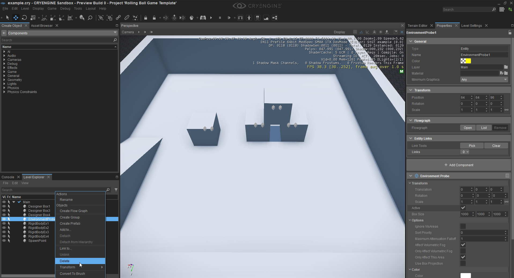
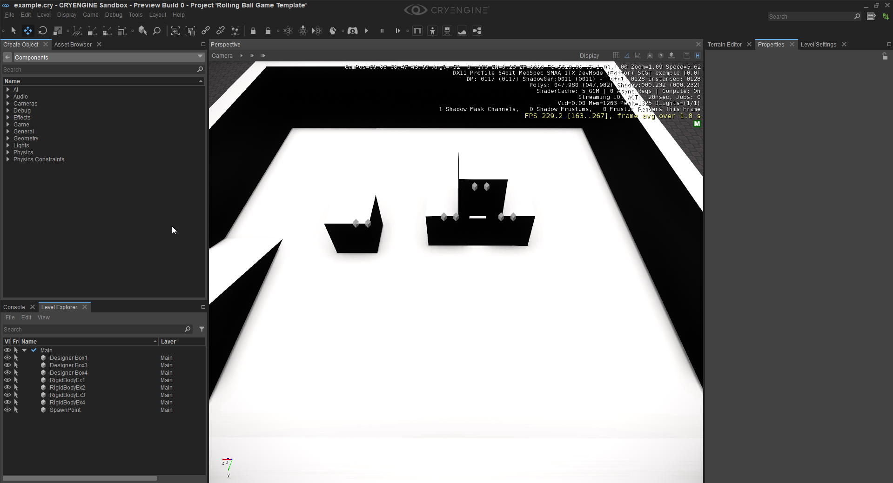
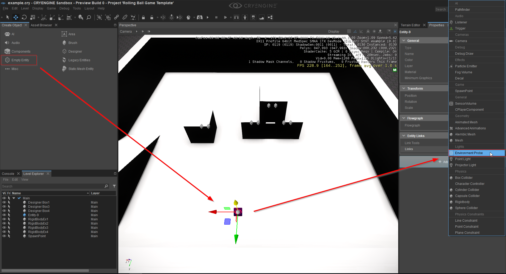
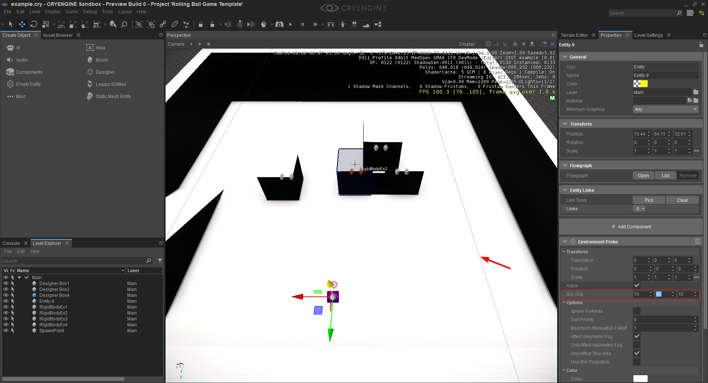
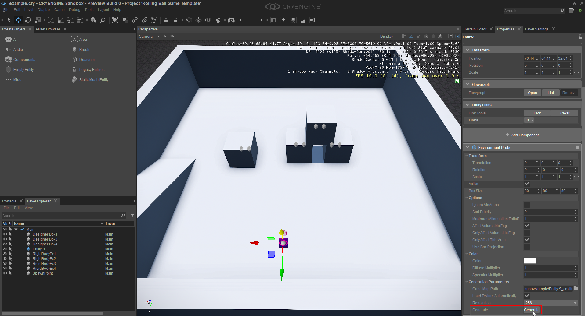
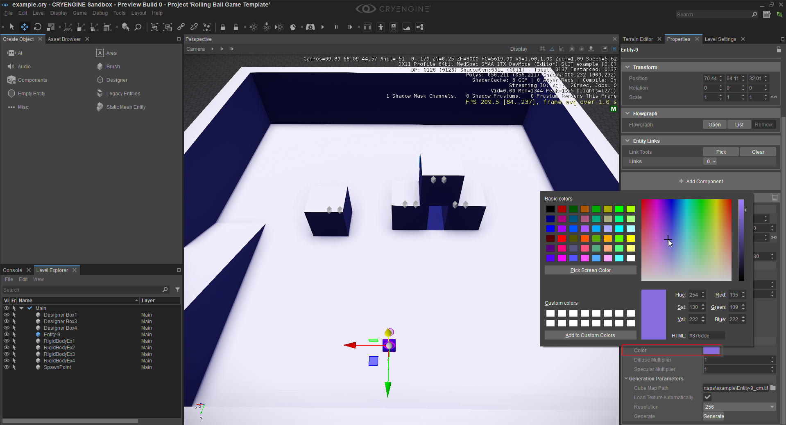

Использование компонента Environment Probe
В этом уроке мы объясним компонент зонда среды и его назначение. С помощью Environment Probes у вас есть возможность легко размещать кубические карты по всему уровню так же, как если бы вы размещали свет. Это очень полезно, особенно с отражающими материалами, поскольку автоматически присваивает кубическую карту всему, что находится в пределах ее радиуса. Я бы также рекомендовал посмотреть Компоненты сущности документацию, чтобы понять или посмотреть, что делают конкретные атрибуты.
Чтобы объяснить компонент зонда окружающей среды, мы будем работать с Rolling Ball template.
Во-первых, мы собираемся удалить уже существующий компонент зонда окружающей среды на уровне Rolling Ball. Чтобы найти уже существующий объект, перейдите к Level Explorer и double щелкните объект "EnvironmentProbe1". Если вы не можете найти Level Explorer, перейдите по ссылке Инструменты -> Редактор уровней -> Level Explorer. Нажмите кнопку Удалить клавишу на клавиатуре или щелкните правой кнопкой мыши объект в Level Explorer и выберите опцию удаления.
Удаление уже существующего объекта EnvironmentProbe1 в Rolling Ball template.

После удаления компонента зонда окружающей среды.

Как вы можете видеть, тени теперь действительно черные и грубые. Итак, это уже может показать, для чего нужен зонд среды: он генерирует кубическую карту сцены и включает физическое затенение. Он также используется для отражения отражающих материалов в вашей сцене. Теперь мы собираемся создать пустую сущность и добавить к ней новый компонент проверки среды. Для этого нажмите кнопку «Пустой объект» на панели «Создать объект» и поместите объект на уровень. После этого выберите объект, нажмите кнопку «Добавить компонент» на панели «Свойства» и выберите компонент зонда среды.
Создайте пустую сущность и добавьте к ней компонент проверки среды.

После добавления компонента вы можете создать рамку вокруг объекта — это визуальное представление области, в которой зонд среды будет активен. Во-первых, нам следует расширить размер эффективного диапазона зонда среды, настроить значения атрибута «Размер поля» в инспекторе свойств объекта и изменить размер поля на что-то большее.
Изменение размера поля компонента Environment Probe.

Но тени по-прежнему не менялись даже после изменения размера коробки. Это связано с тем, что кубическая карта еще не была сгенерирована. Для этого нажмите кнопку «Создать» в разделе «Параметры генерации» в инспекторе свойств. После завершения генерации освещение теперь становится физическим, и вы должны увидеть более плавные тени в области датчика окружающей среды.
Уровень после создания кубической карты.

Теперь вы можете начать экспериментировать с атрибутами компонентов и настроить, например, цвет теней. Просто нажмите на поле цвета рядом с атрибутом цвета в инспекторе и выберите понравившийся цвет.
Изменение цвета компонента датчика окружающей среды.
